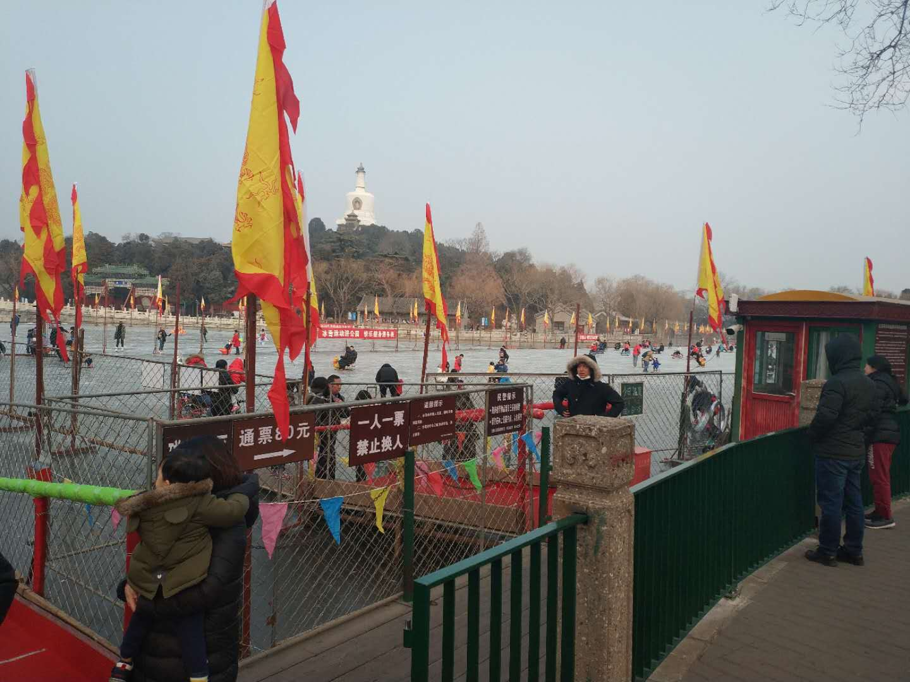
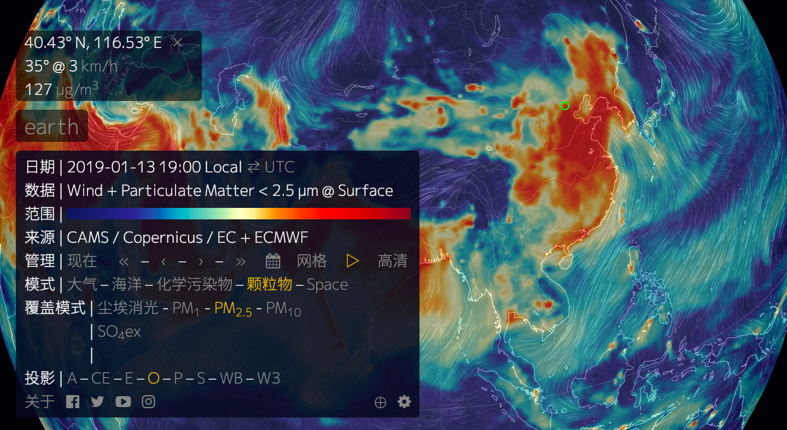
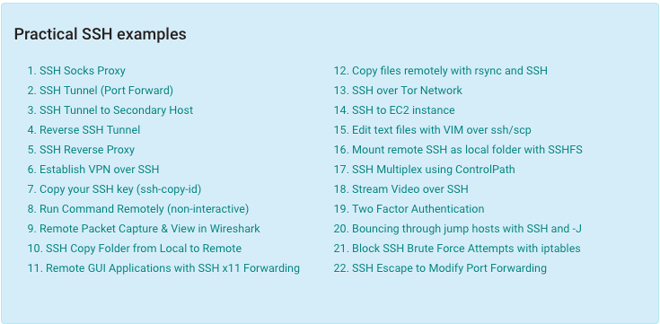

作为一个北方人，见过结冰，但没见过河里结冰还能一群人上去玩的，这次开眼了～
北海公园，80块钱，不限时随意玩，可以：冰上碰碰车、亲子小板凳（我不知道该叫啥）、自己溜冰。
这次路过，下次有机会玩一下！
资源
-
这个网站通过超级计算机的预告，可以在这个交互的动画地图上查看现在的风，天气，海洋和污染状况。每三个小时更新一次。

-
有关 SSH 的各种用法示例，我们平时可能只是简单用一下 SSH，其实它还有很多能实现的功能，不一定用得上，但起码得知道，用的时候能想到。

生活知识
异地购车上牌的政策差异
由于我在杭州工作，但户口还在老家，于是在杭州买了车要开回老家上牌，踩了个地区政策差异的坑，分享下：
1.1 买车是要交「车辆购置税」的，在哪里上牌就在哪里交税；
1.2 交税时，需要一个「车辆购置税申报表」，这张表，按地区不同，政策有所不同：要不要「表」？有些地区要，有些地区不要；「表」由谁提供？有些地区必须由4S店提供，有些地区可以到交税的地方领取；「表」的格式，有些地区要求必须有二维码，有些地区允许手写；
1.3 到哪里交税？有些地区是去国税局交，有些是在车管所。
上面的问题，需要提前问清楚，要有所准备，不要完全相信「官网」上的信息（几年不更新的）。另外，在我朝，花钱找黄牛，总是「靠谱」的。
超声心动图
平时体检时，一般会作彩超，但没有做过心脏的彩超，超声心动图 可以检测心脏瓣膜区域功能、左右侧心脏不正常联系、瓣膜返流、以及心脏输出量的计算等。其他测量的参数包括心脏尺寸（管腔直径和室间隔厚度）和E / A比值。
心脏作为人体的核心部件，必须好好照顾下，以后每年体检可以加上这一项。
-
「工作压力大」会导致各种疾病啥的，看人。用积极的态度对待压力，可能就没那么多毛病了。
技术
docker tag的一次踩坑
这次用 gitlab-ci + k8s 来打包，用了官方的
maven镜像，一开始，ci 里直接用了maven:latest，前两天还能正常打包，后来就出问题了，一查才发现是JDK版本变了，maven:latest从3-jdk-8这个 tag 挪动到3-jdk-11了。所以，以后
latest这个 tag 得慎重用，我觉得，有些保持向前兼容的，是可以一直用latest的。